AIT3018 · Học kỳ I, năm học 2026-2027
Viện Trí tuệ nhân tạo · Trường Đại học Công nghệ, ĐHQGHN
Não bộ gồm những cấu trúc nào?
Nghiên cứu chức năng của chúng bằng cách nào?
Buổi 1 đặt câu hỏi: máy trả lời đúng có đồng nghĩa với máy hiểu không?
Bài Searle (1980) đặt vấn đề liệu việc thực hiện đúng chương trình (cho một đầu vào, thực thi để tạo ra một đầu ra) đã đủ để có sự hiểu.
Ta sẽ xem xét một lập luận và các phản biện.
Minds, Brains and Programs (1980)
Trong mục The Systems Reply có đoạn:
Ở đây, Searle chỉ đang thuật lại ý kiến phản đối mình. Đoạn tiếp theo mới là lời đáp của ông.
Khi đọc bài, có thể ghi lại: phản biện nói gì → tác giả đáp gì → bạn thấy bước nào chưa thuyết phục.
Tín hiệu đi từ cơ thể đến não và ngược lại thế nào?
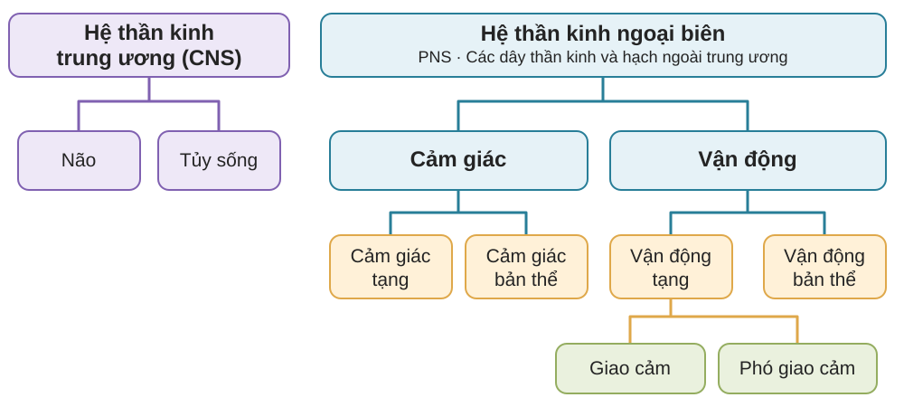
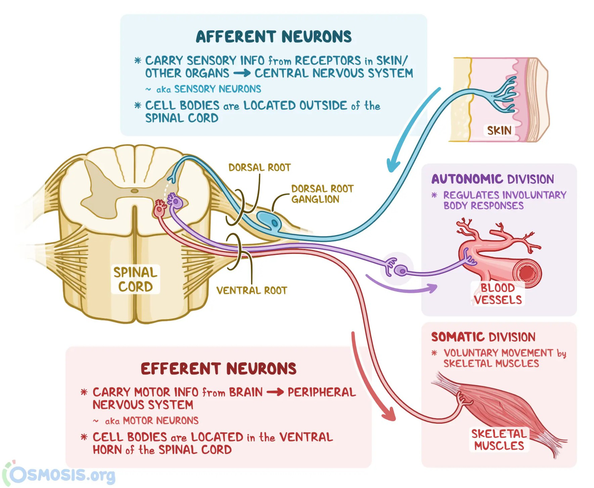
Hướng tâm (afferent): từ thụ thể (receptor) về trung ương.
Ly tâm (efferent): từ trung ương tới cơ (muscle) hoặc tuyến (gland).
“Tâm” ở đây là trung ương, không phải trái tim.
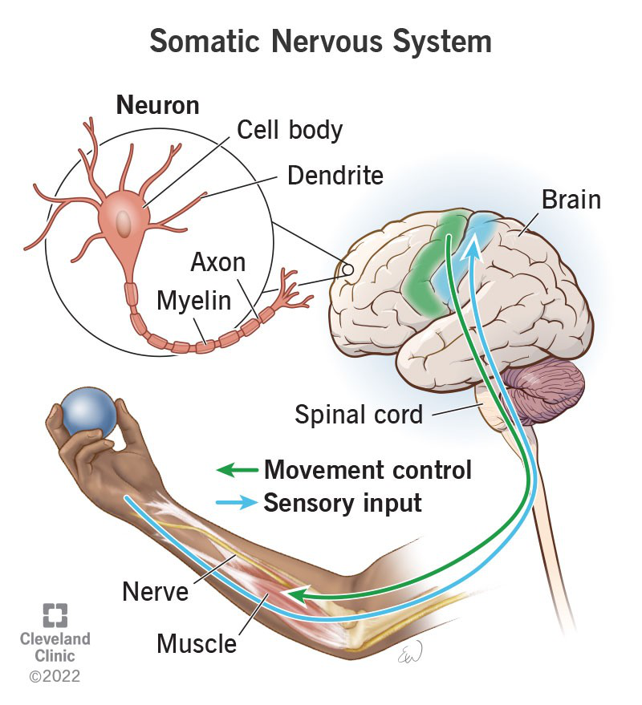
Hai nhánh của hệ thần kinh tự chủ
(autonomic nervous system).
| Hoạt động | Giao cảm (sympathetic) |
Phó giao cảm (parasympathetic) |
|---|---|---|
| Nhịp tim | Thường tăng. | Thường giảm. |
| Tiêu hóa | Thường giảm hoạt động. | Thường tăng hoạt động. |
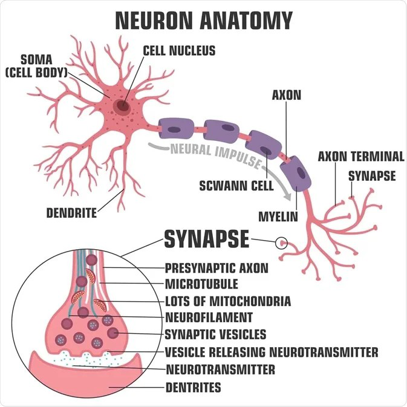
Sợi nhánh (dendrite): tiếp nhận tín hiệu.
Thân tế bào (soma / cell body): duy trì tế bào và tích hợp tín hiệu đến.
Sợi trục (axon): dẫn xung thần kinh (điện thế hoạt động, action potential) tới đầu tận cùng.
Dọc sợi trục: xung điện. Qua synapse hóa học: chất dẫn truyền.
Tế bào đệm (glia) giúp duy trì hoạt động của hệ thần kinh.
Não gồm những phần nào?
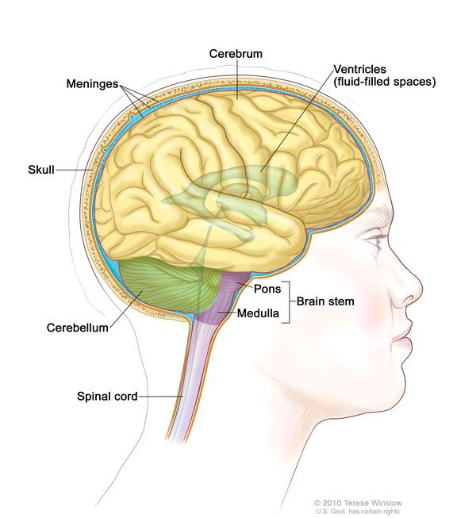
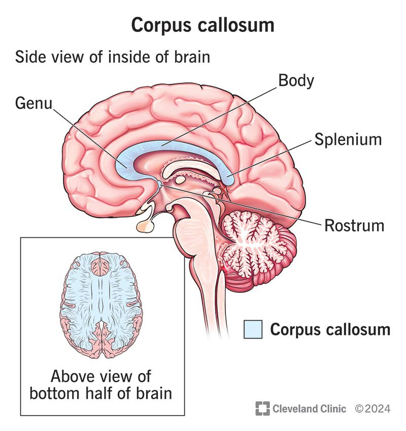
Không chia con người thành kiểu “não trái” và “não phải”.
Corballis (2014) · Left Brain, Right Brain: Facts and Fantasies
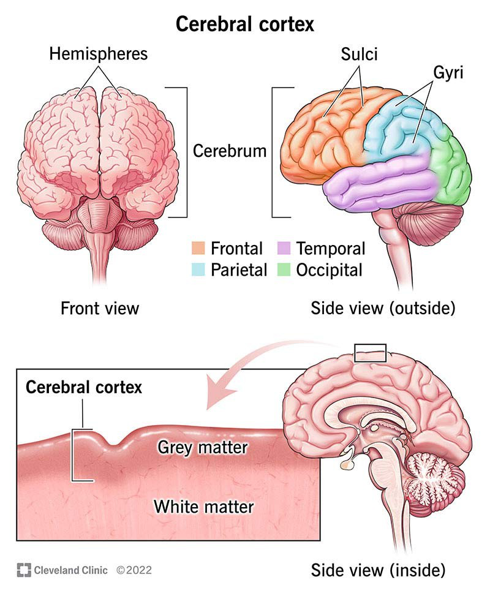
Hồi (gyrus): nếp nổi; rãnh (sulcus): phần lõm giữa các hồi.
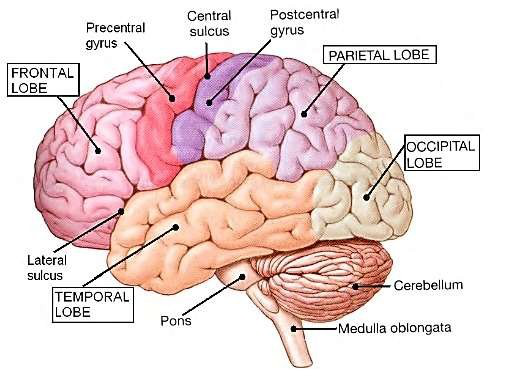
| Thùy | Vai trò tiêu biểu |
|---|---|
| Trán (frontal lobe) |
Vận động chủ ý, lập kế hoạch, suy luận và nhân cách và kiểm soát hành vi. |
| Đỉnh (parietal lobe) |
Tích hợp cảm giác bản thể (somatosensory: chạm, sức ép) và thông tin không gian. |
| Thái dương (temporal lobe) |
Thính giác, ngôn ngữ và trí nhớ. |
| Chẩm (occipital lobe) |
Xử lý thị giác. |
Một chức năng thường cần nhiều vùng phối hợp.
Vỏ đảo (insula) nằm khuất trong rãnh bên (lateral sulcus), không thấy ở mặt ngoài này.
Witelson và cộng sự (1999): so với 35 nam giới.
| Chỉ số | Einstein | Nhóm đối chứng (trung bình ± độ lệch chuẩn) |
|---|---|---|
| Tuổi khi qua đời | 76 tuổi | 57 ± 11 tuổi |
| Khối lượng não tươi | 1.230 g | 1.400 ± 118 g |
| Chiều rộng tối đa mỗi bán cầu |
7,5 cm | 6,5 ± 0,5 cm |
Rộng hơn khoảng 15% ở phép đo này,
không phải toàn bộ não lớn hơn 15%.
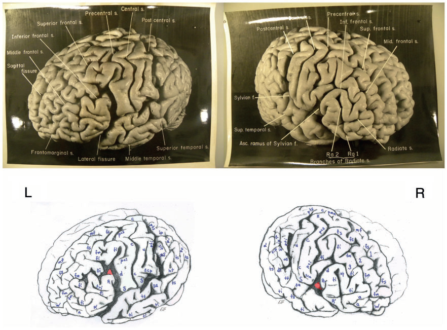
4 hồi ở vùng trán phải, thay vì 3
hồi thường gặp.
Nghiên cứu dùng 14 ảnh, đối chiếu mô tả của 85 bộ não.
Khác biệt này đã đủ để giải thích tài năng của Einstein chưa?
Các vùng não phối hợp với nhau thế nào?
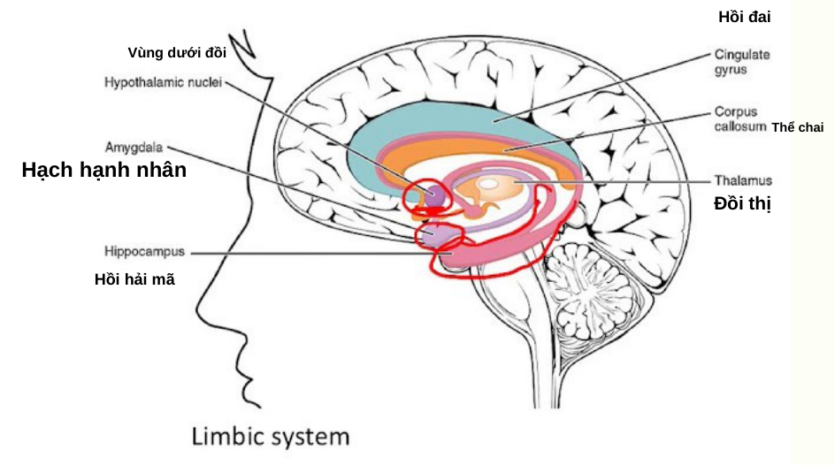
| Cấu trúc | Vai trò tiêu biểu |
|---|---|
| Đồi thị (thalamus) |
Trung chuyển và điều chỉnh nhiều tín hiệu cảm giác tới vỏ não. |
| Hồi đai (cingulate gyrus) |
Chất xám vỏ não; phối hợp cảm xúc, chú ý và hành vi. |
| Hạch nền (basal ganglia) |
Điều hòa vận động, học vận động và học từ phần thưởng. |
| Mô hình kinh điển | Liên hệ thường được giới thiệu |
|---|---|
| Broca: vùng trán dưới, thường bên trái. | Tạo lời nói (speech production). |
| Wernicke: vùng thái dương sau, thường bên trái. | Hiểu ngôn ngữ (language comprehension). |
Cách nhìn này bắt nguồn từ quan sát người bị tổn thương não.
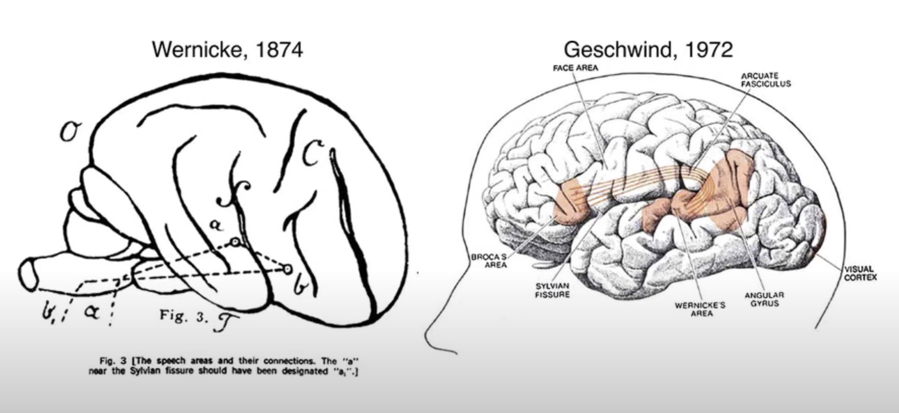
Mô hình mô tả cách tín hiệu truyền giữa các vùng não khi nghe, đọc và nói.
| Nhãn tiếng Anh | Tiếng Việt |
|---|---|
| Primary auditory / visual / motor cortex | Vỏ thính giác / thị giác / vận động sơ cấp |
| Broca’s / Wernicke’s area | Vùng Broca / vùng Wernicke |
| Angular gyrus | Hồi góc |
| Arcuate fasciculus | Bó cung |
Nghe rồi nhắc lại: thính giác → Wernicke → bó cung → Broca → vận
động.
Đọc thành tiếng: thị giác → hồi góc → Wernicke → bó cung → Broca → vận động.
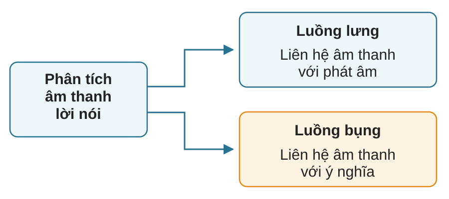
Hickok và Poeppel (2007) · The cortical organization of speech processing
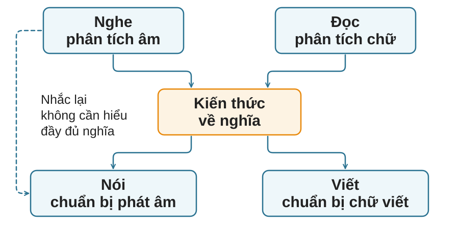
Não thay đổi thế nào trong suốt cuộc đời?
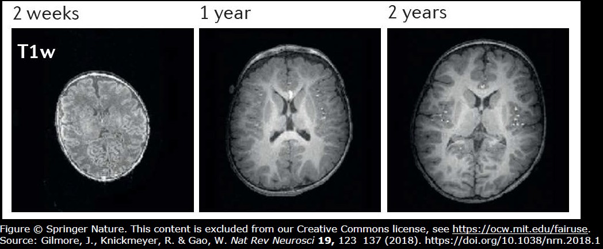
Không chỉ lớn lên: độ tương phản giữa chất xám và chất trắng cũng thay đổi.
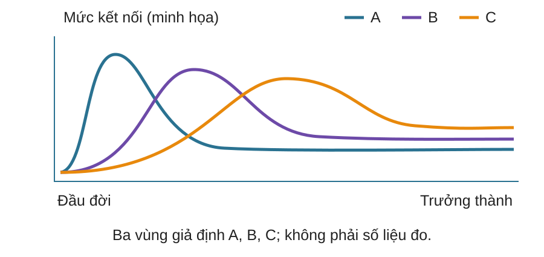
| Quá trình | Điều thay đổi |
|---|---|
| Tạo và cắt tỉa synapse | Các điểm liên lạc giữa tế bào. |
| Myelin hóa (myelination) | Bao myelin quanh sợi trục, hỗ trợ dẫn truyền nhanh. |
Tổn thương não ảnh hưởng đến những khả năng nào?
| Ví dụ | Điểm khác nhau |
|---|---|
| Viêm màng não (meningitis) | Viêm các màng bao quanh não và tủy sống. |
| Động kinh (epilepsy) | Khuynh hướng xuất hiện các cơn động kinh. |
| Đột quỵ (stroke) | Tắc mạch hoặc chảy máu gây tổn thương. |
| Chấn thương não (traumatic brain injury, TBI) | Tổn thương do lực tác động từ bên ngoài. |
| U não (brain tumour) | Tế bào tăng sinh bất thường tạo khối u. |
Ta chọn đột quỵ và mất ngôn ngữ để xem sâu mối liên hệ giữa tổn thương và chức năng.
| Ví dụ | Vùng hoặc hệ liên quan | Biểu hiện có thể gặp |
|---|---|---|
| Đột quỵ MCA trái | Mạng ngôn ngữ bán cầu trái | Mất ngôn ngữ |
| Alzheimer | Thái dương trong, hồi hải mã | Khó nhớ sự kiện mới; về sau có thể khó ngôn ngữ |
| Parkinson | Chất đen (substantia nigra), hệ hạch nền | Rối loạn vận động; có thể khó nói và suy giảm điều hành |
Hậu quả phụ thuộc vị trí, mức độ tổn thương và thời điểm được xử trí.
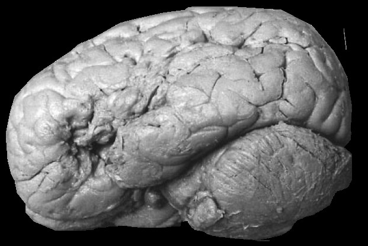
Broca, 1861: bệnh nhân được gọi là “Tan” vì lời nói bị hạn chế nghiêm trọng, gần như chỉ phát ra được âm tiết “tan”.
Khám não sau khi mất cho thấy tổn thương ở vùng trán trái.
Mất ngôn ngữ (aphasia): suy giảm khả năng dùng hoặc hiểu ngôn ngữ do tổn thương não.
| Có thể gặp khó khăn khi | Ví dụ |
|---|---|
| Nói và tìm từ | Biết điều muốn nói nhưng khó gọi đúng tên. |
| Hiểu lời hoặc chữ | Nghe được âm nhưng khó hiểu câu. |
| Đọc và viết | Khó hiểu văn bản hoặc diễn đạt bằng chữ. |
| Dạng | Biểu hiện điển hình |
|---|---|
| Broca | Nói gắng sức, ít trôi chảy; hiểu thường tốt hơn khả năng nói. |
| Wernicke | Nói trôi chảy nhưng nội dung khó hiểu; hiểu lời nói bị ảnh hưởng. |
| Dẫn truyền (conduction) | Nhắc lại khó hơn rõ rệt so với nói tự phát và hiểu. |
Các kiểu biểu hiện giúp phân tích chức năng; không đủ để tự xác định một vị trí tổn thương.
| Tình huống minh họa | Cần phân biệt |
|---|---|
| Nhìn chiếc kéo, biết dùng để cắt nhưng không tìm được từ “kéo”. | Khó truy xuất tên gọi. |
| Không chỉ khó gọi tên mà còn khó nhận biết công dụng của chiếc kéo. | Có thể suy giảm kiến thức ngữ nghĩa về đồ vật. |
Neuroplasticity
Phục hồi không đồng nghĩa sinh thêm nơ-ron hoặc trở lại hoàn toàn như trước.
Làm sao biết não hoạt động thế nào?
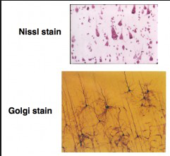
Mô học (histology): nghiên cứu cấu trúc mô ở mức vi thể.
Nhuộm Nissl (Nissl stain): làm rõ thân tế bào.
Nhuộm Golgi (Golgi stain): làm hiện hình dạng và các nhánh của một số nơ-ron.
Quan sát mô giúp trả lời những câu hỏi mà ảnh toàn bộ não không cho thấy.
Từ trường và sóng vô tuyến; phân biệt mô mềm.
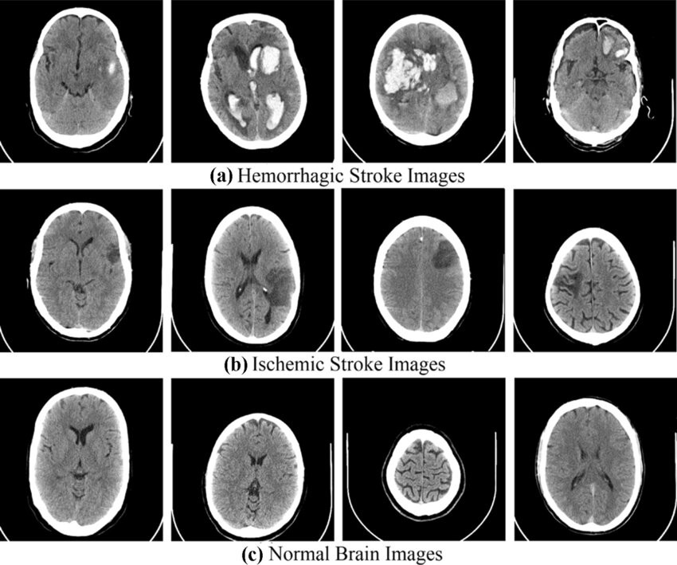
Tia X từ nhiều góc; dựng các lát cắt.
Đáp ứng của máu diễn ra chậm hơn hoạt động điện của nơ-ron.
PET (positron emission tomography): dùng chất đánh dấu phóng xạ để khảo sát chuyển hóa hoặc quá trình phân tử.
Cùng nhìn từ và bấm nút; khác yêu cầu xử lý nghĩa.
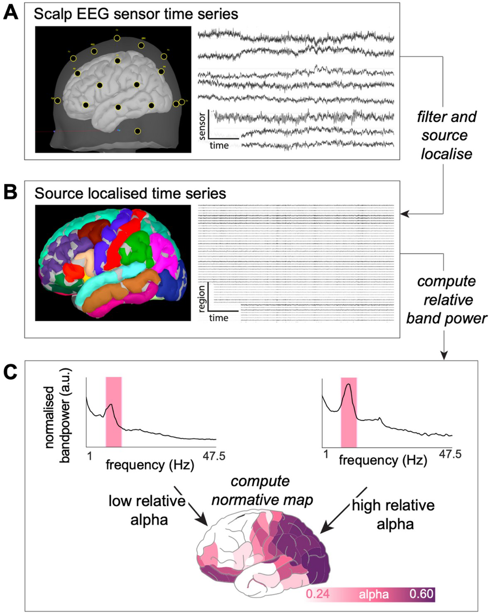
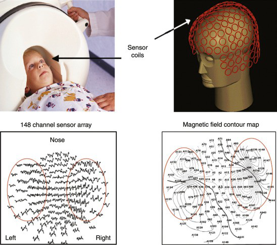
EEG ghi điện thế trên da đầu; MEG ghi từ trường quanh đầu. Cả hai theo dõi biến đổi nhanh.
Nghiên cứu tổn thương (lesion studies): xem chức năng nào thay đổi khi một phần não bị tổn thương.
Transcranial magnetic stimulation
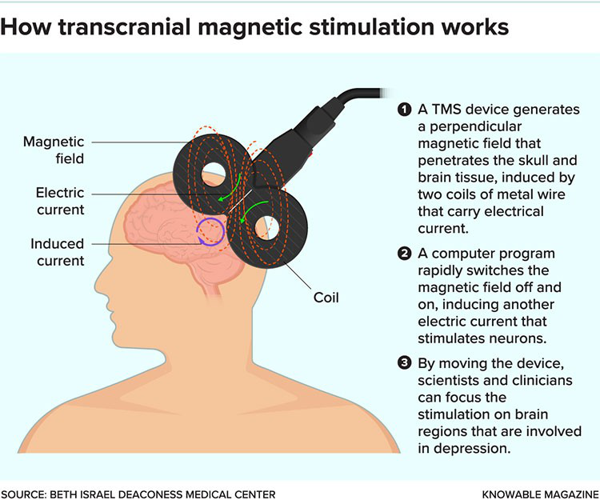
DBS (deep brain stimulation): điện cực cấy trong não.
| Công cụ | Giúp tìm hiểu điều gì? |
|---|---|
| Bất hoạt gene (gene knockout) |
Điều gì thay đổi khi gene không còn hoạt động? |
| Đánh dấu đường nối (circuit tracing) |
Những tế bào hoặc vùng nào kết nối với nhau? |
| Bản đồ não (brain atlas) |
Dữ liệu nằm ở đâu trong một hệ tham chiếu chung? |
Các mô hình động vật giúp nghiên cứu những cơ chế khó khảo sát trực tiếp ở người.
Chọn từ câu hỏi: cấu trúc → mô học/MRI/CT; thời gian → EEG/MEG; tác động → can thiệp và đối chứng.
Não người và não động vật giống và khác nhau ở đâu?
Fang và cộng sự (2022): so sánh tổ chức tế bào ở các vùng vỏ não người và chuột.
| Điểm giống | Điểm khác |
|---|---|
| Cách phân bố tế bào theo lớp có nét tương đồng. | Tỷ lệ các nhóm tế bào và cách chúng nằm gần nhau khác nhau. |
Fang và cộng sự (2022) · Tổ chức tế bào vỏ não người và chuột
Một can thiệp giúp chuột học tốt hơn. Cần kiểm tra gì trước khi kỳ vọng tác dụng tương tự ở người?
Lindhout và cộng sự (2024) · Tiến hóa và nhịp phát triển não
Não và máy tính xử lý thông tin khác nhau thế nào?
| Não người | Máy tính | |
|---|---|---|
| Thành phần | ≈ 86 tỷ nơ-ron, nối qua synapse. | Mạch điện tử; chip H100 ≈ 80 tỷ transistor. |
| Xử lý | Nhiều mạng hoạt động song song. | Xử lý tuần tự và song song. |
| Thay đổi | Kết nối thay đổi qua trải nghiệm. | Chương trình và cơ chế học thay đổi hành vi. |
| Công suất | Khoảng 20 W. | H100 SXM: tối đa 700 W (TDP). |
Azevedo và cộng sự (2009) · NVIDIA H100 · Năng lượng của não · Thông số H100 SXM
Cả hai đều xử lý, lưu giữ và truyền thông tin.
| Khía cạnh | Não người | Máy tính |
|---|---|---|
| Tính toán | Có giới hạn về tốc độ và độ chính xác. | Nhanh và chính xác với nhiều phép tính số học. |
| Sáng tạo | Gắn với kiến thức, trải nghiệm và mục đích. | Có thể tạo văn bản, hình ảnh và giải pháp mới. |
| Cảm xúc, sự hiểu | Gắn với đời sống và trải nghiệm chủ quan. | Biểu hiện giống người chưa đủ xác nhận trải nghiệm. |
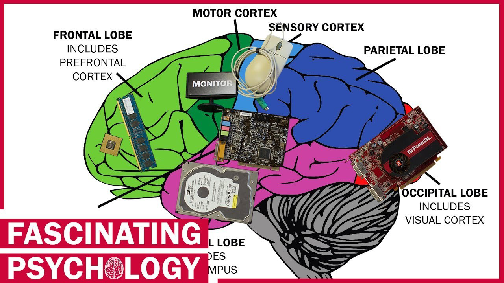
Giao diện não-máy (brain-computer interface, BCI) chuyển tín hiệu thần kinh thành đầu ra cho thiết bị.
Willett và cộng sự (2023) · A high-performance speech neuroprosthesis
Thảo luận:
Điều gì xảy ra nếu một chức năng của não không hoạt động?
Spontaneous Symbol Acquisition and Communicative Use
by Pygmy Chimpanzees (Pan
paniscus)